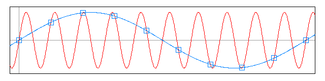

La synthèse par table d’onde est une synthèse exclusivement numérique. Elle a été mise au point pour une raison d’efficience, induite par la capacité de calcul des processeurs. Dans le monde numérique, le temps est granulé suivant une fréquence d’échantillonnage. Sur le même principe, une période d’une onde sonore est granulée et stockée dans une table. La lecture en boucle de cette table permet de produire un signal discret périodique dont la fréquence (ou la hauteur) dépend de la vitesse de lecture d’un cycle. Cette démarche est très économe puisqu’on évite à l’ordinateur de calculer la forme de l’onde de chaque échantillon.
Néanmoins, les partiels d’un son supérieurs à la moitié de la fréquence d’échantillonnage, seuil appelé aussi fréquence de Nyquist, sont corrompus. En effet, on a besoin d’au moins deux échantillons pour coder correctement la fréquence d’un partiel et cette condition n’est plus respectée au-delà de la fréquence de Nyquist. On qualifie ce phénomène de repliement du spectre, car ces partiels sont sous-évalués et ils se retrouvent par réflexion à la fréquence de Nyquist dans le bas du spectre (cf. figure). Ce phénomène a pour conséquence de brouiller le signal et la hauteur désirée. Charles Dodge et Thomas Jerse résolvent le problème en attribuant un seuil fréquentiel à une forme d’onde suivant son contenu spectral et la fréquence d’échantillonnage du système, ou bien ils incluent cette contrainte à l’algorithme de synthèse.

Avec cette technique de synthèse, deux méthodes de création sonore sont possibles. La première consiste à utiliser des formes d’onde atypiques afin de produire des sons complexes. La seconde méthode s’appuie sur le spectre sonore, créé arbitrairement ou à l’aide d’une analyse spectrale d’un court enregistrement, pour calculer le contenu de la table par une série de Fourier inversée. Néanmoins, ces sonorités sont statiques et par conséquent, musicalement inintéressante. Il est donc nécessaire de multiplier ces signaux par une enveloppe d’amplitude et d’ajouter un effet de vibrato ou de trémolo.
Cependant, une solution élégante consiste à interpoler au moins deux tables d’onde pour faire évoluer le spectre d’un son dans le temps. À partir de ce concept, différentes techniques ont été élaborées, par exemple la synthèse vectorielle, la synthèse des principaux éléments, la synthèse par interpolation spectrale ou la synthèse scannée. Toutefois, ces différentes techniques permettent de sélectionner ou d’organiser les tables d’onde à interpoler et nous avons aujourd’hui conservé seulement l’appellation de synthèse par table d’onde. Les synthétiseurs commerciaux actuels comme Serum d’Xfer Records, Massive de Native Instruments ou Pigments d’Arturia sont suffisamment versatiles pour reproduire une grande partie de ces différentes techniques historiques de synthèse.